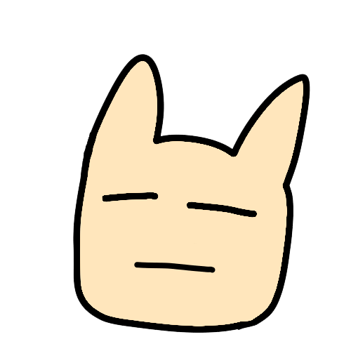

被電爆的Coder —— YuYutw123
我爛我弱，什麼都不會
興趣
程式設計：擅長的語言有C++, Python
影像編輯：常用軟體有Adobe Photoshop, Premiere, After Effects
語言學習：English、日本語、粵語、客語
啊對我還有在經營翻譯頻道「烤肉仔 Barbecuer」
感到氣餒了嗎？

YuYutw123
其實接觸網路世界後，就會發現同齡神人，甚至低齡神人很多，這時候就不能一直把自己和別人比，先天條件、後天教育，我們都是不同的個體，又何求自己和他們有同等能力以及成就？
如果能做到的話當然很好，但今天就算無法與他們並駕齊驅，只要想著把自己的事做好就好，做到對自己問心無愧就好，盡自己最大努力，就可以覺得自己已經做得很好、很棒了，沒必要總是和那些頂端的人比較。
每個人都有自己的定位，找到最適合自己的位置才是最重要的，追求高處是好事，但那是自我實現的目標，而不是讓他成為壓垮自己的重擔。